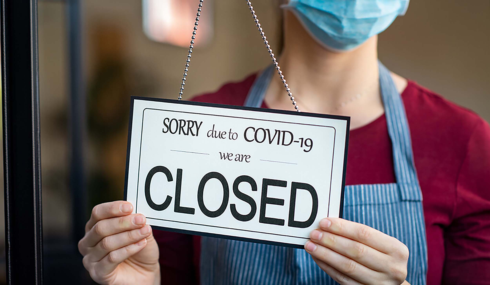
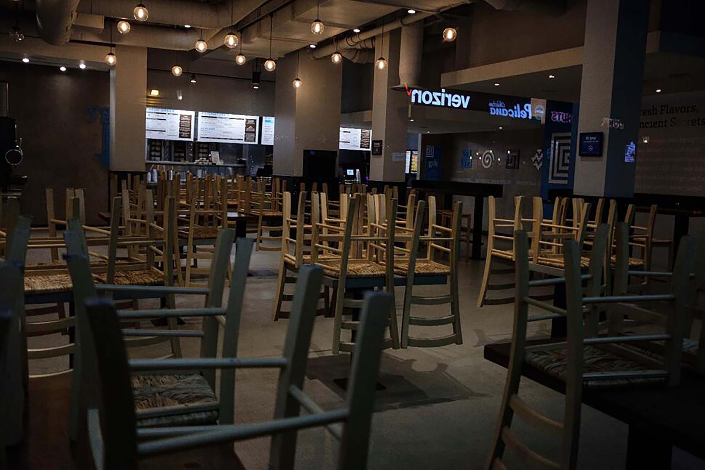
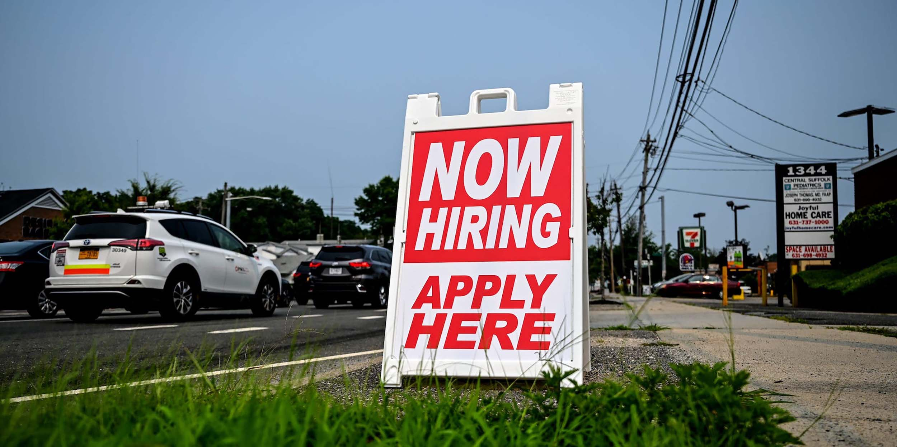

The coronavirus pandemic affected all sectors of the economy in 2020, from movie theaters and
nail salons to warehouses and meat processing facilities. As a result, many businesses across
the country saw their supply chains interrupted, demand for their products and services decline,
shortages in supplies and inputs, and government-mandated closures. At the same time, the federal
government implemented programs designed to help keep employees on payrolls. These are just some
of the effects of the pandemic on businesses and their employees.
Closures

The pandemic had already caused massive dislocation among small businesses just several weeks after
its onset and before the availability of government aid through the Coronavirus Aid, Relief, and
Economic Security (CARES) Act. Across the sample of 5,800 small businesses, 43% of companies had
temporarily closed, and nearly all of these closures were due to COVID-19. The Family Had to close
the gyms they've had for decades because they were forced to close by the government to keep everyone
safe. So many businesses had to sell or go bankrupt since no one was trying to start a new business then.
Not Enough Customers

Businesses also needed more customers. The pandemic caused the government to issue lockdowns, so people
didn't go out to be safe, and companies weren't getting enough customers to pay the bills, which forced
them to sell their businesses. Many local companies that have been around for decades with a rich history
went under because either customers weren't coming or the government forced them to close, for example, gyms.
Lack of Employees

On average, the businesses reported having reduced their active employment by 39% since January. The decline
was particularly sharp in the Mid-Atlantic region (which includes New York City), where 54% of firms were
closed, and employment was down by 47%. Over the entire sample, the number of full-time employees fell by
32% between January 31 and late March 2020. In addition, the number of part-time employees was 57% lower
than at the end of January. As a result, overall employment declined significantly, totaling a 39% reduction
from the January headcount.